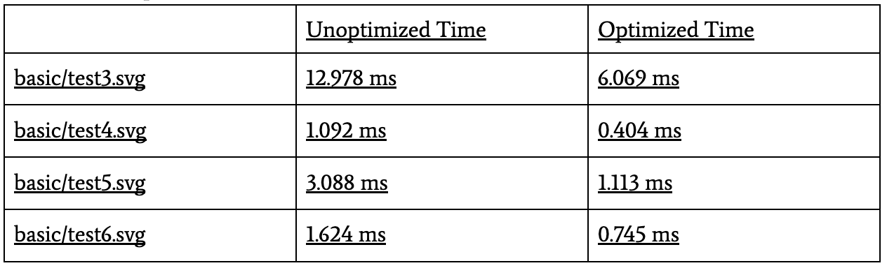
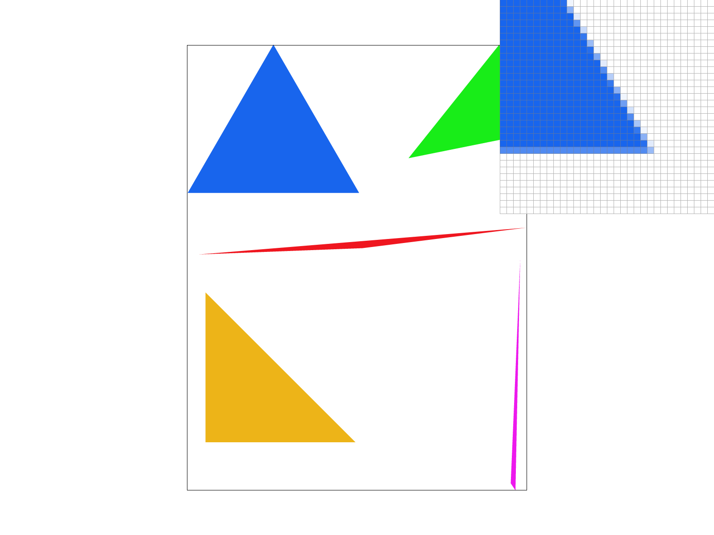
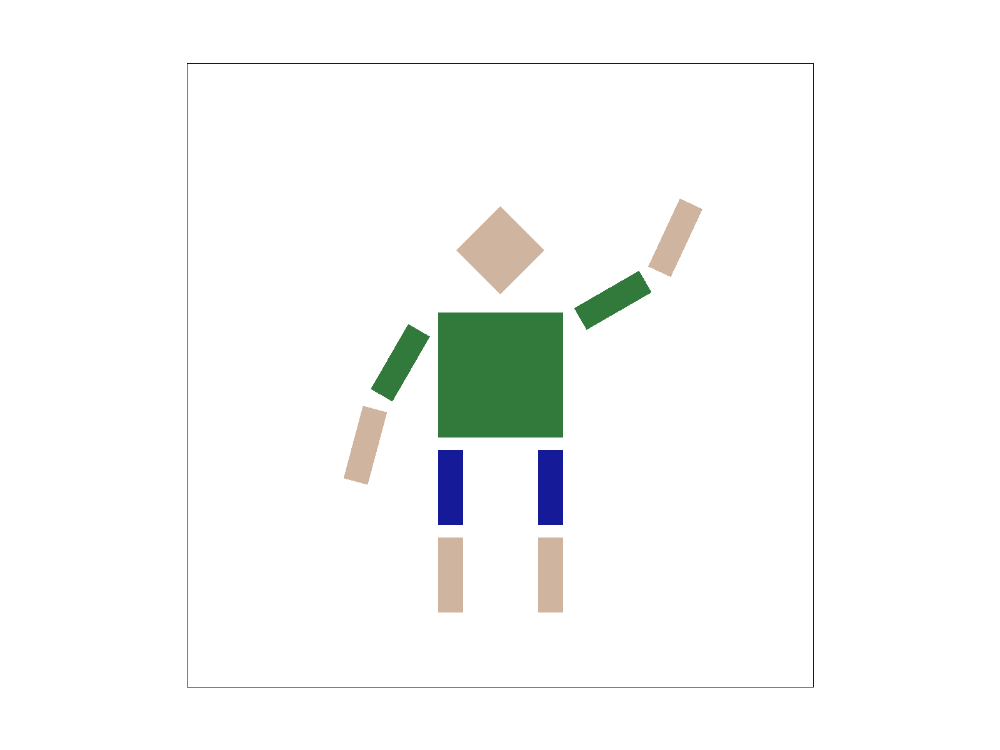
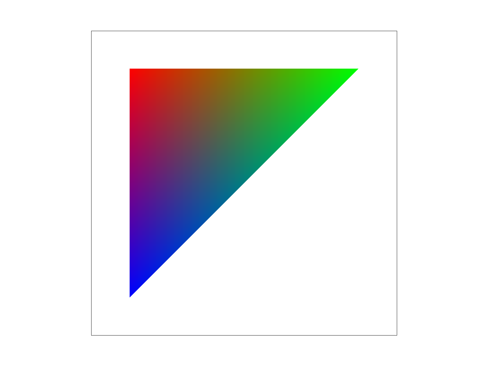
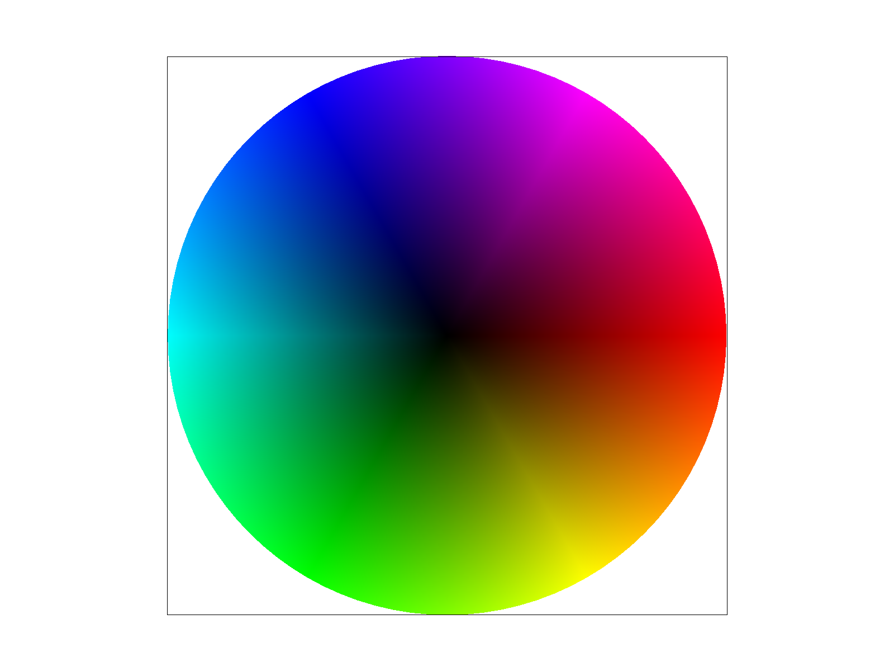
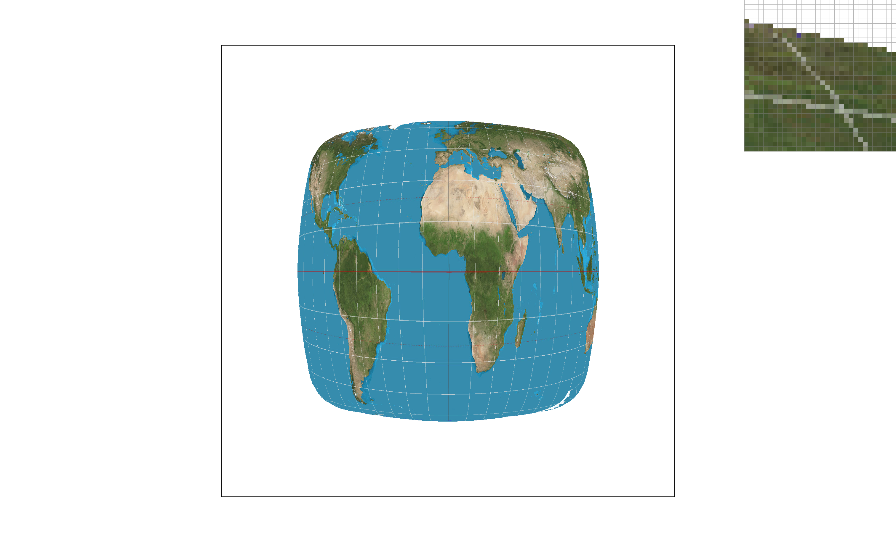
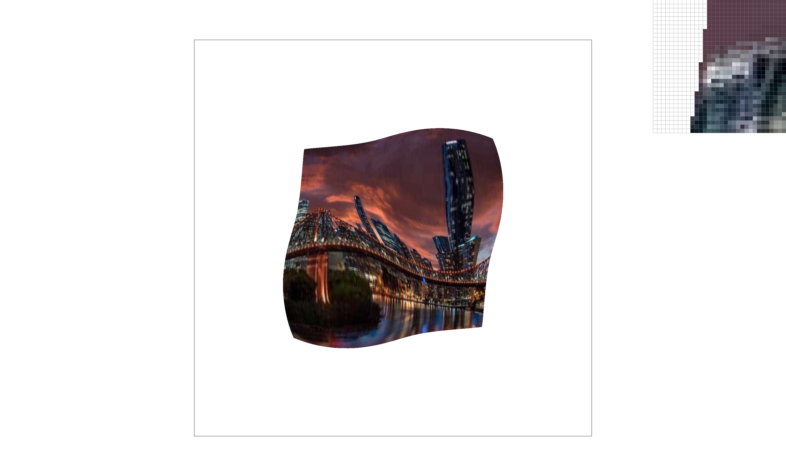

CS184/284A Spring 2025 Homework 1 Write-Up
Link to webpage: https://cal-cs184-student.github.io/hw-webpages-yrao104/hw1/index.html
Link to GitHub repository: https://github.com/cal-cs184-student/hw1-rasterizer-math-nerds
Overview
In this homework, we implemented a rasterizer. This rasterizer includes features to draw single-color triangles, antialias with supersampling, transforms, implements barycentric coordinates, utilizes "pixel sampling" for texture mapping, and includes "level sampling" with mipmaps for texture mapping as described in all the tasks below. After completing this homework, we learned how the different pixel and level sampling methods may not seem that different but in practice can have a pretty big difference visually when zooming into images.Task 1: Drawing Single-Color Triangles
How We Rasterize Triangles
We first rasterize the triangles by calculating the bounding box of the triangle and ensuring that the vertices of the triangle are listed in counter-clockwise order. Then, we check to see if each of the centers of the pixels are within the bounds of the triangle. We check if a pixel is within the bounds by doing the point-in-triangle test, where we check to see if the point is on the correct side of the three sides of the triangle. Finally, if the pixel meets all these requirements, we fill in the pixel with the appropriate color.
Algorithm Explanation
The algorithm runs in O(P) time given that P is the number of pixels in the triangle's bounding box, since we go through each pixel in the bounding box and seeing if it lies within the triangle and checking this is done in constant time. As a result, this is no worse than an algorithm that checks each sample within the bounding box of the triangle. We generate this bounding box by getting the min and max x and y values based on the three points of the triangle.
basic/test4.svg with Default Viewing Parameters
Extra Credit: Optimizations

Beyond simply bounding triangle rasterization, we optimized our solution by removing redundant logic and moving to subsequent for loop iterations faster. We specifically moved the sorting of the vertices of the triangle before the double for loops to ensure this occurred before checking if pixels were in the triangle. In addition, we added a continue inside the double for loops as soon as a pixel fails one of the three line tests.
Task 2: Antialiasing by Supersampling
Supersampling Algorithm & Data Structures
Supersampling is useful for antialiasing because it reduces jagged edges and sharp contrasts between colors by sampling points within each pixel and averaging their colors. By averaging out the colors between boundaries, the overall shapes drawn are much smoother when viewed from close up. The way we modified our rasterization process was by breaking up each pixel into a sample_size number of mini-pixels, determining if each was within the bounds of the rasterization triangle, and coloring them accordingly. To do this, we modified the sample buffer to contain sample_rate samples per pixel. We write colors into the corresponding subpixel locations and then average the colors of all subpixels within each pixel to then write into the final framebuffer. To do this, we resized the sample_buffer by sample_size in order to increase the number of pixels before averaging them. We were thus able to use supersampling to antialias our triangles.
basic/test4.svg

|
|
|
|
 |
Results Explanation
From Sample Rate = 1 to Sample Rate = 16, the contrast between the blueness of the triangle and the white on the outside became less and less harsh. This makes sense, as we took the average of more and more subpixels per each pixel in the original image, creating a deeper gradient on the edges of the triangle.
Task 3: Transforms
svg/transforms/robot.svg

Cubeman Modification Explanation
We were attempting to make the right arm of our cubeman wave initially, but slowly added more features to make him more humanoid, like lowering his left hand and giving him style. We rotated the right arm upward and adjusted the position of the left arm downward. We did this using rotation and translation matrices.
Task 4: Barycentric Coordinates
Barycentric Coordinates
Barycentric coordinates are weighted combinations of the three triangle vertices. Each coordinate specifies how much each vertex influences the point and the the weights must sum to 1. In our code, we define them as alpha, beta, and gamma. We can also tell if a point is inside the triangle if alpha, beta, and gamma are all >= 0. They help us take the weighted average of the color of each corner of the triangle to then fill in a corresponding pixel using interpolation. As shown in the image below, the color at any given point corresponds to its proportional distance between the point and the vertex and the point and the opposing side for all the vertices of the triangle.

svg/basic/test7.svg

Task 5: "Pixel Sampling" for Texture Mapping
Pixel Sampling + Our Algorithm
Pixel sampling allows us to look at the corresponding (u, v) texture coordinate and sample these nearby coordinates to calculate the color of a specific pixel.
This allows us to properly map 2D textures onto 3D surface models.
Nearest pixel sampling looks at the texture value of the nearest sample location and uses that for a specific pixel.
On the other hand, bilinear filtering pixel sampling takes the texture values of the four nearest sample locations and weights them by distance to find the texture value of a specific pixel.
basic/texmap/ SVG File
| Sampling @ 1 Sample Per Pixel | |
|---|---|
|
 |
|
| Sampling @ 16 Samples Per Pixel | |
|
|
|
Commentary About Differences
From Nearest to Bilinear Sampling at 1 sample per pixel, there’s a noticeable difference with the lines of longitude on the globe, where the nearest sampling picture has jagged lines while the bilinear case has smoothed out.
With the 16 samples per pixel case, similar to Task 2, the edges of the globe became smoother when zoomed in close compared to the 1 samples per pixel case for sampling methods.
The largest difference between the sampling methods would be observed when simulating magnification on a 3D image.
With nearest sampling, the image would look pixelated, while with bilinear sampling, the image would look smoother but also blurrier.
Task 6: "Level Sampling" with Mipmaps for Texture Mapping
Level Sampling + Implementation
Level sampling takes color averages of a certain number of close by pixels based on the mipmap level in a reference image in such a way that a resulting texture mapped from the reference image can be rendered with minimal moire patterns and more efficiently.
The way we implemented level sampling was by calculating which pre-computed mipmap level to use for every set of barycentric coordinates and running the pixel sampling from task 5 as normal.
We calculated the mipmap level using the derivatives of the corresponding (u, v) texture coordinates.
The specific level for a pair of barycentric coordinates is tied to how much change occurs when mapping from pixels to texels, and corresponds to how much a specific color pixel is “shrunk” from one to the other.
Comparing the Techniques
Pixel sampling is a memory and runtime cheap way to smooth out pixelated images, especially useful for images that are zoomed in.
However, it isn’t as useful for antialiasing.
Level sampling is also relatively cheap memory and runtime wise, only requiring minimal additional memory to hold the diminishingly large mipmap levels and requiring basic derivative calculations and is great at antialiasing heavily zoomed out textures.
Supersampling is memory and runtime intensive, having to capture hugely increasing numbers of samples per pixel proportional to the given sample size.
However, it produces the best results, with the most complete image antialiasing of all three methods.
Own PNG Image
|
|
|
|
 |
|